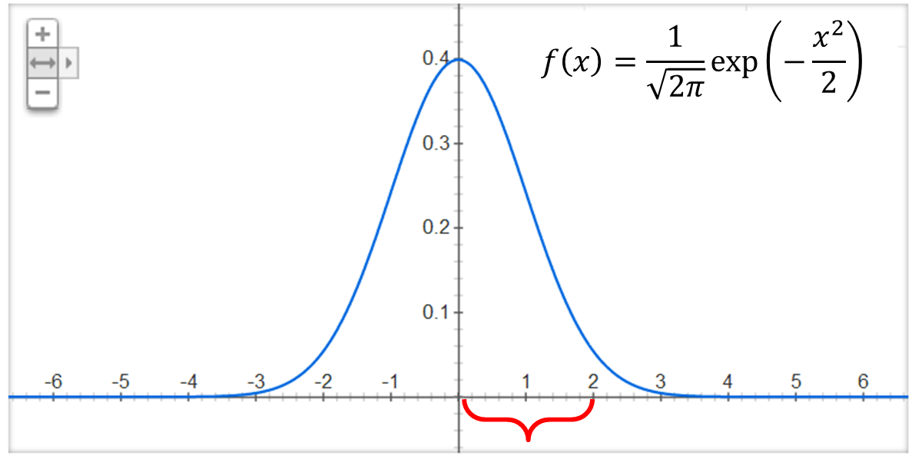

確率論 3
そろそろ慣れてきたので、標本空間や事象を考えず、確率変数に注目していく.
「確率変数」とは，ランダムに値の変化する実数変数で, その値の出やすさは確率分布によって決まる.
「確率分布」とは, 確率1を，確率変数が取りうるすべての値に,どう振り分けるかを表現するもの.
- 離散的な確率変数を考えるとき,確率分布は対応表で表現できる. (取りうるすべての値X=aがどの程度の確率で起こるかを表でまとめられる)
- 連続的な確率変数を考えるとき,確率分布は確率密度関数とその積分で表現できる．
戻る 確率論4へ
確率変数の変換
- 離散確率変数の場合 (すごい簡単)
下の表の確率分布に従う離散型の確率変数Xを考える.
| X | P(X=x) |
| 100 | 0.1 |
| 200 | 0.1 |
| 300 | 0.2 |
| 400 | 0.2 |
| 500 | 0.2 |
| 600 | 0.2 |
確率変数Xに対し， 確率変数Y Zを, Y = 2X+10, Z = X^2 と定義する．
単純に考えて，X=100の時 Y=210という値を取るから, P(X=100) = P(Y=210)=0.1が成り立つ,
X=300の時 Z=90000という値を取るから，P(X=300) = P(Z=90000)=0.2となる. この要領で表を埋めると，
| Y=2X+10 | P(Y=y) | Z=X^2 | P(Z=z) | ||
| 210 | 0.1 | 10000 | 0.1 | ||
| 410 | 0.1 | 40000 | 0.1 | ||
| 610 | 0.2 | 90000 | 0.2 | ||
| 810 | 0.2 | 160000 | 0.2 | ||
| 1010 | 0.2 | 250000 | 0.2 | ||
| 1210 | 0.2 | 360000 | 0.2 |
確率変数は離散的な値しか取らず, 各値に対して確率が決まっているので，
単純に確率変数の値を, 変換式に代入した表を作れば良い. (離散の場合は非常に簡単)
- 連続確率変数の場合

- ここで，確率変数 Y = X + 2 の確率密度関数fY(y)がどうなるか考える.
- 例えば , X=2 の時Y=4 ,なので, fY(4) = fX(2)
- 同様に , X=x の時Y=x+2,なので, fY(x+2) = fX(x)
- くどいけど, X=y-2の時Y=y ,なので, fY(y) = fX(y-2)
つまり，fY(y)は fx(x)を+2平行移動したものに一致する

- 区間 0≦X≦2 のfX(x) の形と， 区間2≦Y≦4 のfY(y) の形が一致していることに注目.
- ここで，確率変数 Y = 3X + 2 の確率密度関数fY(y)がどうなるか考える.
-先の例と同様すると，
- X=2 の時Y=8 ,なので , fY(4) = fX(2)
- X=x の時Y=3x+2,なので, fY(3x+2) = fX(x)
- X=(y-2)/3の時Y=y ,なので , fY(y) = fX((y-2)/3)
つまり，fY(y)は fx(x)を 横軸方向に+2平行移動して1/3倍したものに一致する
としたいところだがこれは誤り.
XとYの値の対応は良いのだが, 確率密度関数fX(x)を横軸方向に1/3倍（引き伸ばし）しているため,
結局, 全体を積分したら1になるという条件を満たすため, x方向に引き伸ばしたぶん, y方向に縮めれば良い. つまり...
- X=2 の時Y=8 ,なので , fY(4) = 1/3 fX(2)
- X=x の時Y=3x+2,なので, fY(3x+2) = 1/3 fX(x)
- X=(y-2)/3の時Y=y ,なので , fY(y) = 1/3 fX((y-2)/3)
これが Y = 3X + 2の確率密度関数
確率変数の変換
連続確率変数Xの確率密度関数fX(x)が与えられている下で， Y = g(X)という確率変数を考える.
確率変数Yの確率密度関数は以下で与えられる
 = \left| \frac{f_X(x)}{g'(x)}\right| = \left| \frac{f_X(g^{-1}(y)}{g'(g^{-1}(y))}\right|)
ただしg(X)は, 微分可能, 逆関数g-1が存在, g'(x)≠0, 単射(a≠bならばg(a)≠g(b)) である事を仮定している.
連続確率変数Xの確率密度関数fX(x)が与えられている下で， Y = g(X)という確率変数を考える.
確率変数Yの確率密度関数は以下で与えられる
ただしg(X)は, 微分可能, 逆関数g-1が存在, g'(x)≠0, 単射(a≠bならばg(a)≠g(b)) である事を仮定している.
2変数の変換
todo
戻る 確率論4へ